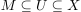
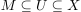
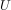
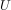
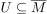
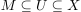
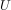

dichte Menge (Topologie)
1. Definition
Sei  eine Topologie und .
eine Topologie und .
 heißt dicht in , wenn gilt:
heißt dicht in , wenn gilt:

1
d.h. jeder punkt von ist ein Berührpunkt von
Sei eine Topologie und .
heißt dicht in , wenn gilt:
d.h. jeder punkt von ist ein Berührpunkt von